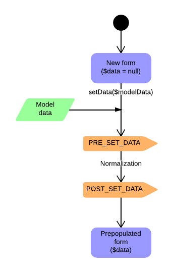

Form Events¶
The Form component provides a structured process to let you customize your forms, by making use of the EventDispatcher component. Using form events, you may modify information or fields at different steps of the workflow: from the population of the form to the submission of the data from the request.
For example, if you need to add a field depending on request values, you can
register an event listener to the FormEvents::PRE_SUBMIT event as follows:
// ...
use Symfony\Component\Form\FormEvent;
use Symfony\Component\Form\FormEvents;
$listener = function (FormEvent $event) {
// ...
};
$form = $formFactory->createBuilder()
// ... add form fields
->addEventListener(FormEvents::PRE_SUBMIT, $listener);
// ...
The Form Workflow¶
The Form Submission Workflow¶

1) Pre-populating the Form (FormEvents::PRE_SET_DATA and FormEvents::POST_SET_DATA)¶

Two events are dispatched during pre-population of a form, when
Form::setData()
is called: FormEvents::PRE_SET_DATA and FormEvents::POST_SET_DATA.
A) The FormEvents::PRE_SET_DATA Event¶
The FormEvents::PRE_SET_DATA event is dispatched at the beginning of the
Form::setData() method. It can be used to:
- Modify the data given during pre-population;
- Modify a form depending on the pre-populated data (adding or removing fields dynamically).
| Data Type | Value |
|---|---|
| Model data | null |
| Normalized data | null |
| View data | null |
See also
See all form events at a glance in the Form Events Information Table.
Caution
During FormEvents::PRE_SET_DATA,
Form::setData()
is locked and will throw an exception if used. If you wish to modify
data, you should use
FormEvent::setData()
instead.
B) The FormEvents::POST_SET_DATA Event¶
The FormEvents::POST_SET_DATA event is dispatched at the end of the
Form::setData()
method. This event is mostly here for reading data after having pre-populated
the form.
| Data Type | Value |
|---|---|
| Model data | Model data injected into setData() |
| Normalized data | Model data transformed using a model transformer |
| View data | Normalized data transformed using a view transformer |
See also
See all form events at a glance in the Form Events Information Table.
2) Submitting a Form (FormEvents::PRE_SUBMIT, FormEvents::SUBMIT and FormEvents::POST_SUBMIT)¶

Three events are dispatched when
Form::handleRequest()
or Form::submit() are
called: FormEvents::PRE_SUBMIT, FormEvents::SUBMIT,
FormEvents::POST_SUBMIT.
A) The FormEvents::PRE_SUBMIT Event¶
The FormEvents::PRE_SUBMIT event is dispatched at the beginning of the
Form::submit() method.
It can be used to:
- Change data from the request, before submitting the data to the form;
- Add or remove form fields, before submitting the data to the form.
| Data Type | Value |
|---|---|
| Model data | Same as in FormEvents::POST_SET_DATA |
| Normalized data | Same as in FormEvents::POST_SET_DATA |
| View data | Same as in FormEvents::POST_SET_DATA |
See also
See all form events at a glance in the Form Events Information Table.
B) The FormEvents::SUBMIT Event¶
The FormEvents::SUBMIT event is dispatched right before the
Form::submit() method
transforms back the normalized data to the model and view data.
It can be used to change data from the normalized representation of the data.
| Data Type | Value |
|---|---|
| Model data | Same as in FormEvents::POST_SET_DATA |
| Normalized data | Data from the request reverse-transformed from the request using a view transformer |
| View data | Same as in FormEvents::POST_SET_DATA |
See also
See all form events at a glance in the Form Events Information Table.
Caution
At this point, you cannot add or remove fields to the form.
C) The FormEvents::POST_SUBMIT Event¶
The FormEvents::POST_SUBMIT event is dispatched after the
Form::submit() once the
model and view data have been denormalized.
It can be used to fetch data after denormalization.
| Data Type | Value |
|---|---|
| Model data | Normalized data reverse-transformed using a model transformer |
| Normalized data | Same as in FormEvents::SUBMIT |
| View data | Normalized data transformed using a view transformer |
See also
See all form events at a glance in the Form Events Information Table.
Caution
At this point, you cannot add or remove fields to the current form and its children.
Registering Event Listeners or Event Subscribers¶
In order to be able to use Form events, you need to create an event listener or an event subscriber and register it to an event.
The name of each of the “form” events is defined as a constant on the
FormEvents class.
Additionally, each event callback (listener or subscriber method) is passed a
single argument, which is an instance of
FormEvent. The event object contains a
reference to the current state of the form and the current data being
processed.
| Name | FormEvents Constant |
Event’s Data |
|---|---|---|
form.pre_set_data |
FormEvents::PRE_SET_DATA |
Model data |
form.post_set_data |
FormEvents::POST_SET_DATA |
Model data |
form.pre_submit |
FormEvents::PRE_SUBMIT |
Request data |
form.submit |
FormEvents::SUBMIT |
Normalized data |
form.post_submit |
FormEvents::POST_SUBMIT |
View data |
Event Listeners¶
An event listener may be any type of valid callable. For example, you can
define an event listener function inline right in the addEventListener
method of the FormFactory:
// ...
use Symfony\Component\Form\Extension\Core\Type\CheckboxType;
use Symfony\Component\Form\Extension\Core\Type\EmailType;
use Symfony\Component\Form\Extension\Core\Type\TextType;
use Symfony\Component\Form\FormEvent;
use Symfony\Component\Form\FormEvents;
$form = $formFactory->createBuilder()
->add('username', TextType::class)
->add('showEmail', CheckboxType::class)
->addEventListener(FormEvents::PRE_SUBMIT, function (FormEvent $event) {
$user = $event->getData();
$form = $event->getForm();
if (!$user) {
return;
}
// checks whether the user has chosen to display their email or not.
// If the data was submitted previously, the additional value that is
// included in the request variables needs to be removed.
if (isset($user['showEmail']) && $user['showEmail']) {
$form->add('email', EmailType::class);
} else {
unset($user['email']);
$event->setData($user);
}
})
->getForm();
// ...
When you have created a form type class, you can use one of its methods as a callback for better readability:
// src/Form/SubscriptionType.php
namespace App\Form;
use Symfony\Component\Form\Extension\Core\Type\CheckboxType;
use Symfony\Component\Form\Extension\Core\Type\TextType;
use Symfony\Component\Form\FormEvent;
use Symfony\Component\Form\FormEvents;
// ...
class SubscriptionType extends AbstractType
{
public function buildForm(FormBuilderInterface $builder, array $options): void
{
$builder
->add('username', TextType::class)
->add('showEmail', CheckboxType::class)
->addEventListener(
FormEvents::PRE_SET_DATA,
[$this, 'onPreSetData']
)
;
}
public function onPreSetData(FormEvent $event): void
{
// ...
}
}
Event Subscribers¶
Event subscribers have different uses:
- Improving readability;
- Listening to multiple events;
- Regrouping multiple listeners inside a single class.
Consider the following example of a form event subscriber:
// src/Form/EventListener/AddEmailFieldListener.php
namespace App\Form\EventListener;
use Symfony\Component\EventDispatcher\EventSubscriberInterface;
use Symfony\Component\Form\Extension\Core\Type\EmailType;
use Symfony\Component\Form\FormEvent;
use Symfony\Component\Form\FormEvents;
class AddEmailFieldListener implements EventSubscriberInterface
{
public static function getSubscribedEvents(): array
{
return [
FormEvents::PRE_SET_DATA => 'onPreSetData',
FormEvents::PRE_SUBMIT => 'onPreSubmit',
];
}
public function onPreSetData(FormEvent $event): void
{
$user = $event->getData();
$form = $event->getForm();
// checks whether the user from the initial data has chosen to
// display their email or not.
if (true === $user->isShowEmail()) {
$form->add('email', EmailType::class);
}
}
public function onPreSubmit(FormEvent $event): void
{
$user = $event->getData();
$form = $event->getForm();
if (!$user) {
return;
}
// checks whether the user has chosen to display their email or not.
// If the data was submitted previously, the additional value that
// is included in the request variables needs to be removed.
if (isset($user['showEmail']) && $user['showEmail']) {
$form->add('email', EmailType::class);
} else {
unset($user['email']);
$event->setData($user);
}
}
}
To register the event subscriber, use the addEventSubscriber() method:
use App\Form\EventListener\AddEmailFieldListener;
use Symfony\Component\Form\Extension\Core\Type\CheckboxType;
use Symfony\Component\Form\Extension\Core\Type\TextType;
// ...
$form = $formFactory->createBuilder()
->add('username', TextType::class)
->add('showEmail', CheckboxType::class)
->addEventSubscriber(new AddEmailFieldListener())
->getForm();
// ...